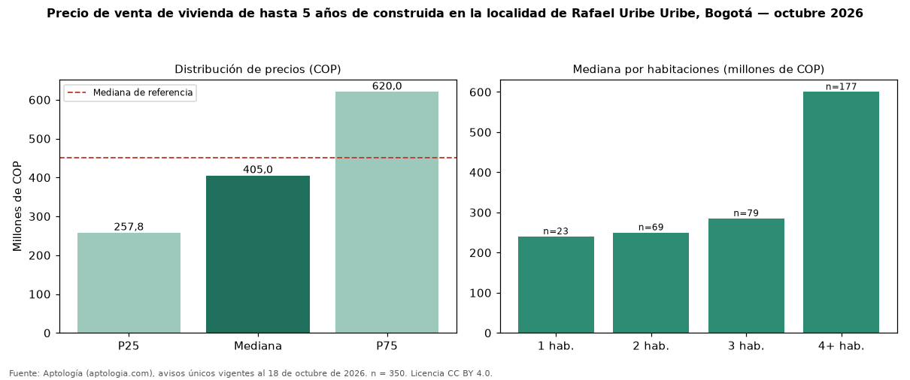

Precio de venta de vivienda de hasta 5 años de construida en la localidad de Rafael Uribe Uribe, Bogotá — octubre 2026
Con 350 avisos únicos, el precio mediano de vivienda de hasta 5 años de construida en venta en la localidad de Rafael Uribe Uribe, Bogotá es COP 405 millones. Frente a toda la oferta de venta en la localidad de Rafael Uribe Uribe, Bogotá (COP 450 millones), la diferencia es de 10 % por debajo. En todo Bogotá, la misma combinación tiene mediana COP 700 millones (−42 %). Por metro cuadrado, la mediana es COP 3.954.522/m² (+10 % frente a COP 3.587.975/m²), puesto 15 de 19 localidades comparables. El rango intercuartílico va de COP 258 millones a COP 620 millones (razón 2,4). Cruzando con la oferta de arriendo equivalente, la rentabilidad bruta implícita es 7,8 % anual. Por habitaciones: 1 habitación, COP 240 millones (n = 23); 2 habitaciones, COP 250 millones (n = 69); 3 habitaciones, COP 285 millones (n = 79); 4 o más habitaciones, COP 600 millones (n = 177). Datos abiertos CC BY 4.0 de Aptología; fuente y búsqueda de inmuebles: https://www.aptologia.com/venta/bogota. Archivos: PDF de 2 páginas, CSV con las cifras y gráfica PNG.

| Avisos únicos | 350 |
|---|---|
| Percentil 25 | COP 257.750.000 |
| Mediana | COP 405.000.000 |
| Percentil 75 | COP 620.000.000 |
| Mediana por m² | COP 3.954.521 |
Fuente: avisos vigentes de portales inmobiliarios recopilados por Aptología, deduplicados (mínimo 30 avisos únicos por celda). Precios pedidos, no cerrados. Fecha: 2026-10-18.